15 / 15 selected runs passed: 5 manual + 10 navigation.
Native Gazebo 10.5/OGRE2 + C flight core host DLL + ROS2 DDS; synthetic sensors and simulated localization; no physical BLE/ESC/hardware validation.
Model: 1.2 kg, J=(0.012,0.012,0.022) kg·m², 450 mm diagonal, 6 N/motor, 40 ms lag; all unmeasured. RGB ranging uses known-size blue fixtures, not arbitrary obstacle depth. Manual pilot is a feedback algorithm emitting raw Xbox reports, not a real human.
Lowest measured landing error in this set: verified-a-20261021-env03-nav. This selection is not a real-world reliability ranking.
manual: mean 9.5 cm, sample SD 6.3 cm (n=5) · navigation: mean 1.5 cm, sample SD 0.5 cm (n=10). These describe the selected simulated cases; they are not sensor uncertainty estimates or hardware confidence bounds.
Machine-readable results and model assumptions
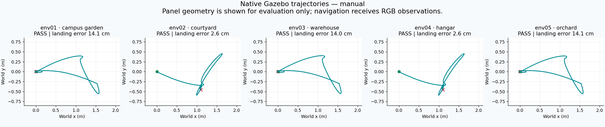
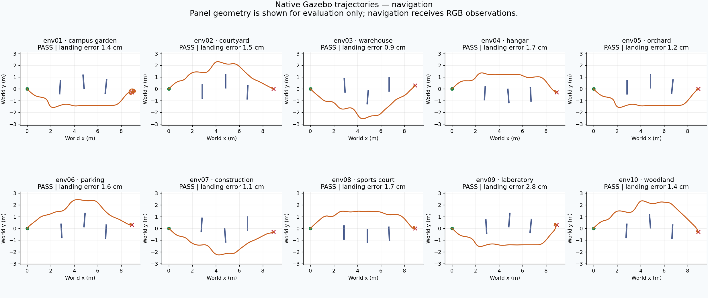
| Run | Result | Landing error (cm) | Simulation (s) |
|---|---|---|---|
| suite-20261021-env01-manual | PASS | 14.1 | 26.8 |
| suite-20261021-env02-manual | PASS | 2.6 | 26.6 |
| suite-20261021-env03-manual | PASS | 14.0 | 26.8 |
| suite-20261021-env04-manual | PASS | 2.6 | 26.6 |
| suite-20261021-env05-manual | PASS | 14.1 | 26.8 |
| verified-a-20261021-env01-nav | PASS | 1.4 | 57.3 |
| verified-a-20261021-env02-nav | PASS | 1.5 | 50.2 |
| verified-a-20261021-env03-nav | PASS | 0.9 | 50.5 |
| verified-b-20261021-env04-nav | PASS | 1.7 | 47.5 |
| verified-b-20261021-env05-nav | PASS | 1.2 | 49.9 |
| verified-b-20261021-env06-nav | PASS | 1.6 | 46.8 |
| verified-c-20261021-env07-nav | PASS | 1.1 | 49.7 |
| verified-c-20261021-env08-nav | PASS | 1.7 | 51.1 |
| verified-c-20261021-env09-nav | PASS | 2.8 | 51.2 |
| verified-c-20261021-env10-nav | PASS | 1.4 | 50.6 |
HID reports: 1339 · companion frames: 0 · YOLO/PnP frames: 0/0
Flight CSV · Xbox reports · Gazebo original log · ROS transport log · Assumptions and result · PC request · Exact world
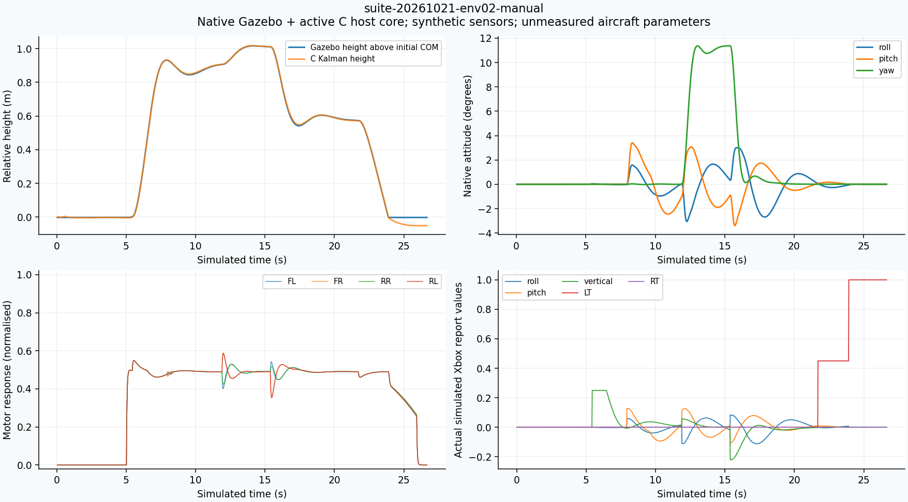
HID reports: 1332 · companion frames: 0 · YOLO/PnP frames: 0/0
Flight CSV · Xbox reports · Gazebo original log · ROS transport log · Assumptions and result · PC request · Exact world
HID reports: 1339 · companion frames: 0 · YOLO/PnP frames: 0/0
Flight CSV · Xbox reports · Gazebo original log · ROS transport log · Assumptions and result · PC request · Exact world
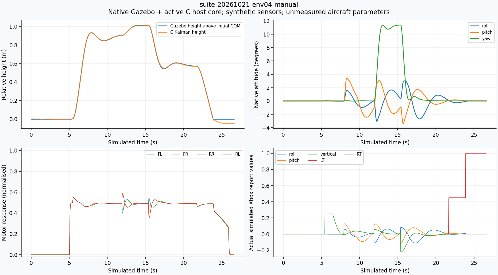
HID reports: 1330 · companion frames: 0 · YOLO/PnP frames: 0/0
Flight CSV · Xbox reports · Gazebo original log · ROS transport log · Assumptions and result · PC request · Exact world
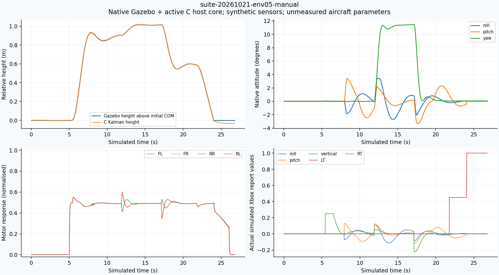
HID reports: 1338 · companion frames: 0 · YOLO/PnP frames: 0/0
Flight CSV · Xbox reports · Gazebo original log · ROS transport log · Assumptions and result · PC request · Exact world
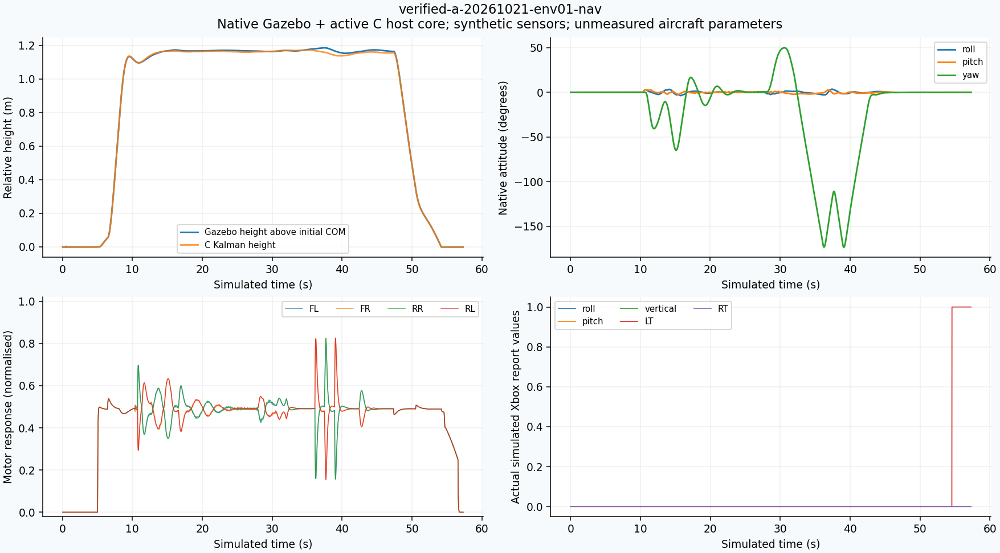
HID reports: 2864 · companion frames: 2455 · YOLO/PnP frames: 558/552
Flight CSV · Xbox reports · Gazebo original log · ROS transport log · Assumptions and result · PC request · Exact world
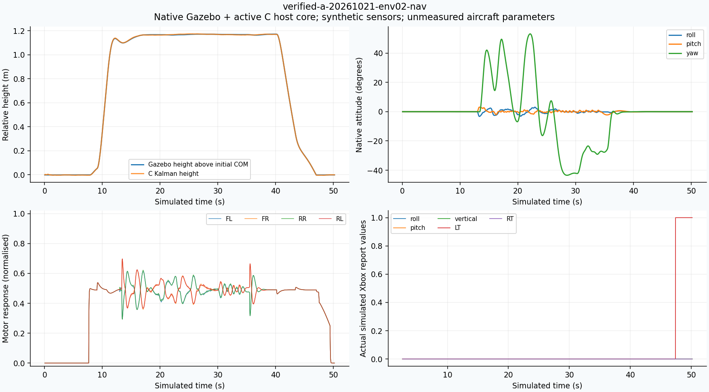
HID reports: 2377 · companion frames: 1967 · YOLO/PnP frames: 484/481
Flight CSV · Xbox reports · Gazebo original log · ROS transport log · Assumptions and result · PC request · Exact world
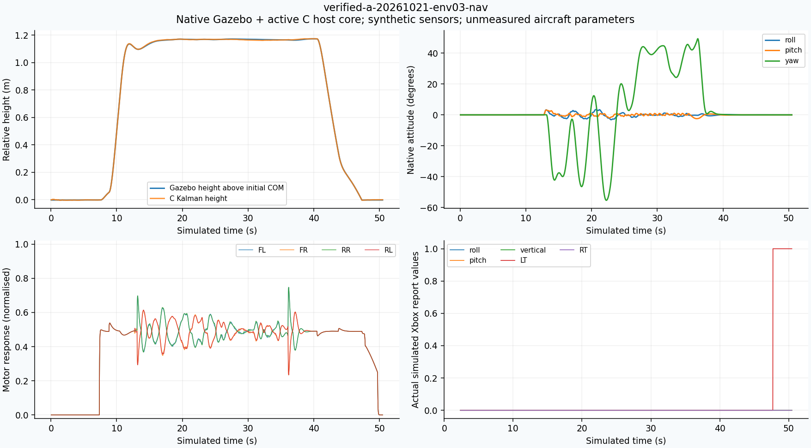
HID reports: 2406 · companion frames: 1996 · YOLO/PnP frames: 489/487
Flight CSV · Xbox reports · Gazebo original log · ROS transport log · Assumptions and result · PC request · Exact world
HID reports: 2376 · companion frames: 1966 · YOLO/PnP frames: 455/455
Flight CSV · Xbox reports · Gazebo original log · ROS transport log · Assumptions and result · PC request · Exact world
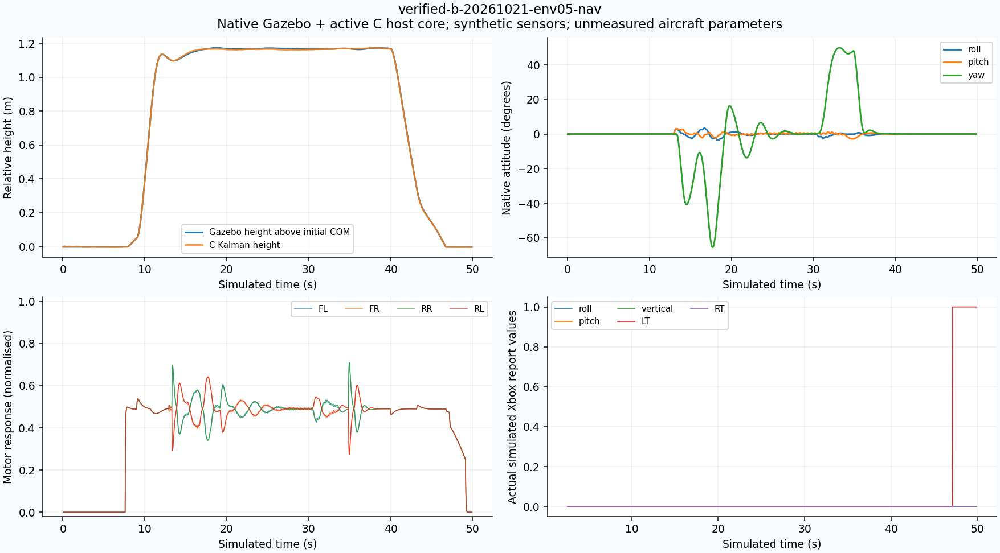
HID reports: 2365 · companion frames: 1956 · YOLO/PnP frames: 479/479
Flight CSV · Xbox reports · Gazebo original log · ROS transport log · Assumptions and result · PC request · Exact world
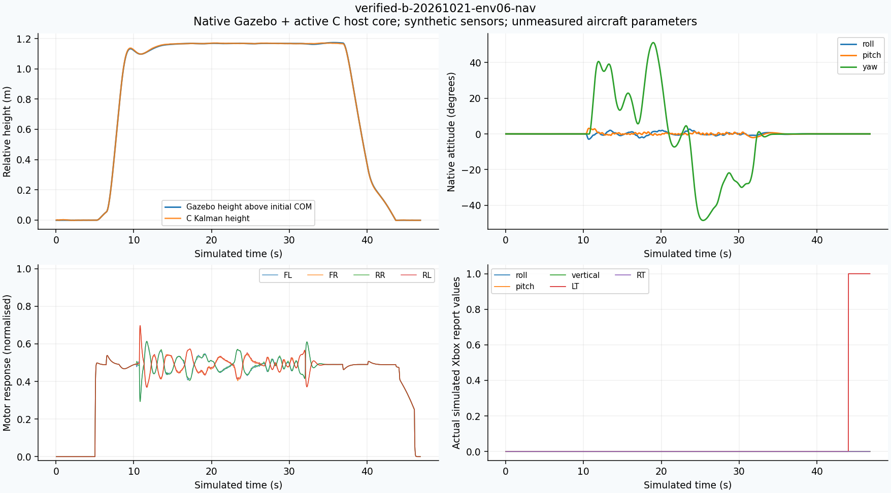
HID reports: 2341 · companion frames: 1930 · YOLO/PnP frames: 449/444
Flight CSV · Xbox reports · Gazebo original log · ROS transport log · Assumptions and result · PC request · Exact world
HID reports: 2348 · companion frames: 1939 · YOLO/PnP frames: 479/473
Flight CSV · Xbox reports · Gazebo original log · ROS transport log · Assumptions and result · PC request · Exact world
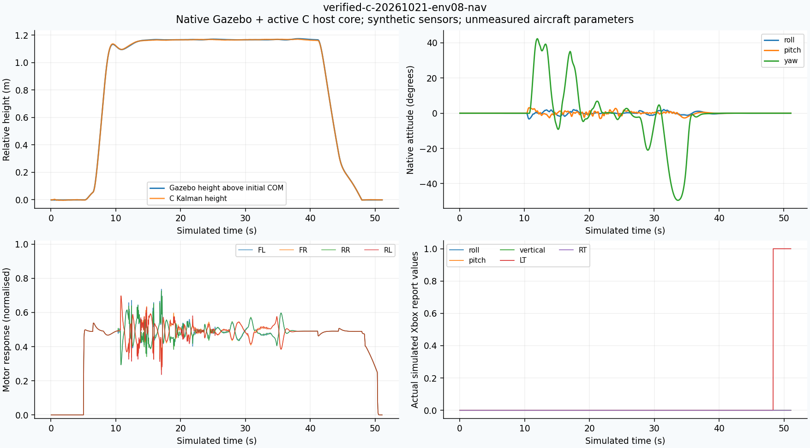
HID reports: 2553 · companion frames: 2144 · YOLO/PnP frames: 477/477
Flight CSV · Xbox reports · Gazebo original log · ROS transport log · Assumptions and result · PC request · Exact world
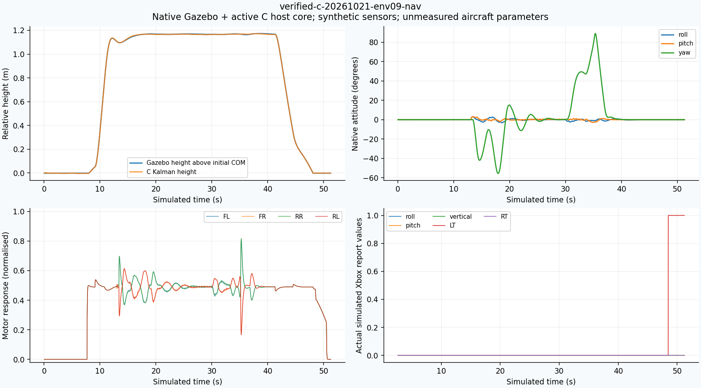
HID reports: 2429 · companion frames: 2020 · YOLO/PnP frames: 494/491
Flight CSV · Xbox reports · Gazebo original log · ROS transport log · Assumptions and result · PC request · Exact world
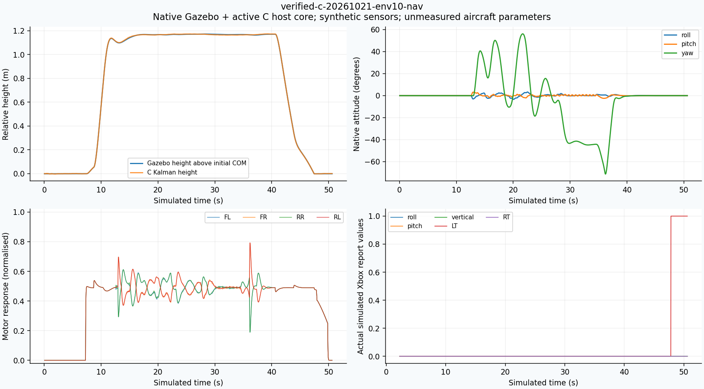
HID reports: 2418 · companion frames: 2008 · YOLO/PnP frames: 488/486
Flight CSV · Xbox reports · Gazebo original log · ROS transport log · Assumptions and result · PC request · Exact world
Outside the 15-case suite: the ground-PC HTTP map tool submitted custom endpoints through ROS2; the virtual Xbox supplied no automatic mission request.
Original PC requests/replies · Virtual Xbox role · Flight result
These failures are excluded from the final selected set but remain original project evidence.